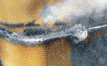
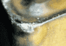
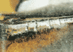
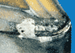

| Вид износа | Описание износа | Причина | Устранение |
|---|---|---|---|
| Быстрый износ по задней поверхности, вызывающие ухудшение качества обработанной поверхности и/или выход размера за пределы поля допуска. |
Слишком большая скорость резания или недостаточная износостойкость. Слишком низкая подача. |
Уменьшить скорость резания. Выбрать более износостойкую марку сплава. Увеличить подачу. |
|
|  | Образование проточин по задней поверхности, снижающих качество обработанной поверхности и вызывающих опасность скола режущей кромки. |
Обрабатываемый материал упрочняется в процессе резания. Работа по корке. |
Уменьшить скорость резания. Выбрать более прочную марку сплава. Увеличить скорость резания. |
|  | Выкрашивания режущей кромки, ведущие к ухудшению качества обработанной поверхности и чрезмерному износу по задней поверхности. |
Слишком хрупкая марка твердого сплава. Геометрия пластины не обеспечивает достаточной прочности. Наростообразование. |
Выбрать более прочную марку сплава. Выбрать пластину с более прочной геометрией. Увеличить скорость резания или перейти на пластину с положительными передними углами. В начале обработки уменьшить подачу. |
|  | Мелкие перпендикулярные режущей кромке трещины, ведущие к ее выкрашиванию и ухудшению чистоты обработанной поверхности. |
Термические трещины образуются при резких изменениях температуры вследствие: - Прерывистого резания. - Непостоянства подвода СОЖ. |
Выбрать более прочную марку сплава, с лучшей сопротивляемостью колебаниям температуры. Охлаждение должно быть обильным и непрерывным или отсутствовать. |
|  | Нарост ухудшает чистоту обработки и ведет к выкрашиванию режущей кромки в момент его срыва. |
Образуется нарост из-за: -Низкой скорости резания. -Небольшой подачи. -Отрицательного переднего угла на режущей кромке. |
Увеличить скорость резания. Увеличить подачу. Выбрать пластину с положительным передним углом. |